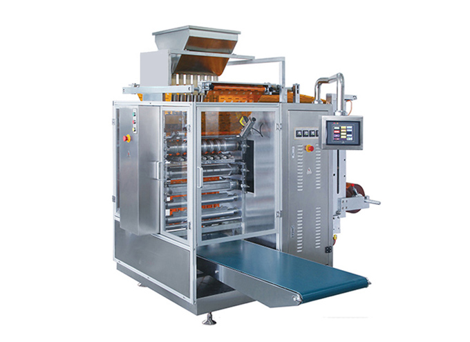

SKU: SAL-M-21
Automatic Side Sealing Machine
| Sub-Category | Spices Processing |
| Model | SS-450 |
| Material | Mild Steel with SS 304 parts |
| Brand | KMG |
An automatic side sealing machine is a packaging machine used to wrap products in a continuous film and seal them from the sides automatically. It is mainly used for high-speed packaging of products like boxes, books, bottles, and food items.
This machine forms a tight and secure seal along the sides of the package, ensuring protection from dust, moisture, and damage. It works with materials like shrink film or plastic film, providing neat and professional packaging.
Automatic side sealing machines are widely used in industries because they increase production efficiency, reduce manual work, and provide consistent sealing quality.
This machine forms a tight and secure seal along the sides of the package, ensuring protection from dust, moisture, and damage. It works with materials like shrink film or plastic film, providing neat and professional packaging.
Automatic side sealing machines are widely used in industries because they increase production efficiency, reduce manual work, and provide consistent sealing quality.
Rate this product:
Click a star to submit your review